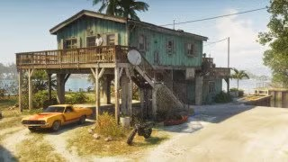
Leonida Keys Safehouse
La planque des Keys, avec ses véhicules dédiés — dont le kayak.
S4 · G6 · Secrets
Rockstar n'a jamais nommé un seul easter egg de GTA VI. Alors voici la seule distinction qui compte : les clins d'œil repérés dans un média officiel, avec support et date — et les affirmations communautaires sans preuve.
Rockstar n'a jamais nommé un seul easter egg de GTA VI dans sa communication officielle. Tout ce qui circule vient donc d'un relevé — et tous les relevés ne se valent pas.
SEC-09SEC-11SEC-12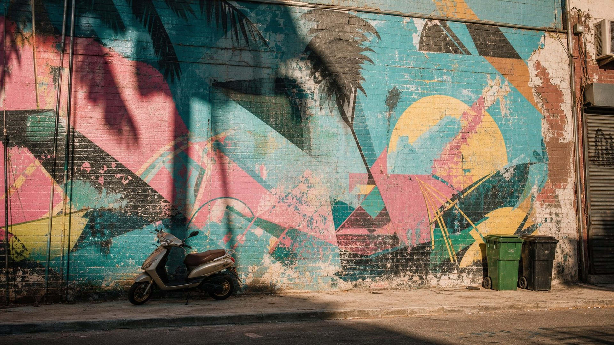
Les clins d'oeil relevés dans les médias officiels sont décrits par leur thème, sans coordonnées précises. Les positions exactes relèvent de la découverte personnelle et ne sont pas publiées.
| Média | Date | Détail repéré | Réf. |
|---|---|---|---|
| Trailer 1 | 05/12/2023 | Ocean View Hotel, premier planque de Vice City, et un autocollant « Petty Forever » | SEC-13 |
| Trailer 2 | 06/05/2025 | Armurerie « Phil's Ammu-Nation », clin d'œil à Phil Cassidy (GTA III / Vice City) | SEC-14 |
| Trailer 2 | repéré le 21/06/2026 | Gecko peint sur le mur du magasin, portant la chemise hawaïenne bleue de Tommy Vercetti | SEC-14 |
| Cover art | 19/06/2026 | Trois emplacements de la cover de 2002 réutilisés : Sea Sparrow, moto, supercar jaune à la place de l'Infernus | SEC-15 |
SEC-14SEC-16Red Dead Redemption 2 : la publicité parodique du « Prairie Sandwich Box Meal » dans l'Extended Look (à 7 min 34) est filmée sur un décor du jeu, au nord d'Annesburg.SEC-17Trevor et l'art : l'appartement de Lucia contient un tirage de style Patrick Nagel, très proche de l'esthétique Vice City, et un ours en peluche rappelant celui de Trevor dans GTA V.SEC-18Scooter Brothers : le pseudo « @ScooterBros » apparaît dans le chat d'un livestream in-game, rappel de la vidéo virale de 2008 déjà citée par Trevor dans GTA V.SEC-19Dexter : un appartement de l'Extended Look reprend la disposition de celui de Dexter Morgan, série située à Miami.SEC-10Le nom de l'État : « Leonida » renvoie à Juan Ponce de León, première expédition européenne en Floride en 1513.SEC-10Marques et gags : retour de Patriot Beer (GTA IV et V), façade « Only in Leonida » (parodie de Florida Man), bannière du club Nine1Nine.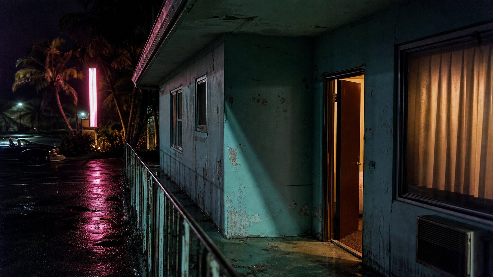
Correction utile, parce que la rumeur va plus vite que Rockstar : on n'achète pas de commerces dans GTA VI. Les seuls biens réellement achetables sont les garages personnels, qui étendent le stockage au-delà des trois véhicules de départ. Les planques, elles, se débloquent par l'histoire — jamais à l'argent.

La planque des Keys, avec ses véhicules dédiés — dont le kayak.
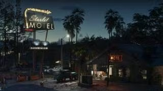
Le motel au panneau « vacancy, pool, wi-fi » : le point de chute du port.
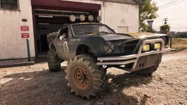
Livré avec le buggy Vapid Dominator '67 dans l'Ultimate Edition. Stockage supplémentaire.
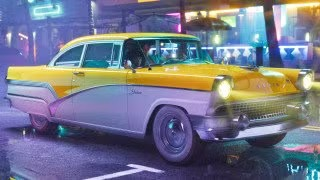
L'un des garages cités par Rockstar lors des présentations presse d'août 2026.
PRESSE · 18/11 Visuels de lieux issus des captures officielles relayées par GTABase (gtabase.com/gta-6/properties), consultées le 18/11/2026. Documents promotionnels Rockstar, reproduits à titre informatif.
Ces découvertes viennent de joueurs, publiées et filmées pendant la sortie décalée du 18 et du 19 novembre. Elles sont donc documentées — et rien ne garantit qu'elles soient volontaires.
Au sommet d'une tour de communications, après environ sept minutes d'escalade, un nid contient des oeufs peints. En lancer un vers le sol déclenche une cinématique cachée. SEC-33
Une silhouette apparaît près du lac Cottonmouth : il faut courir vers elle et ouvrir le mode Photo pour la voir correctement. Les mêmes heures ont livré un crabe géant sur un ponton et un chien en jet-ski. SEC-34
Une maison ordinaire de Belville correspond trait pour trait à celle aperçue dans la remasterisation de San Andreas en 2021, jusqu'à la place des plantes. Le premier aperçu du jeu aurait donc dormi deux ans dans un autre jeu. SEC-35
Deux casinos, un zoo et un cimetière existent dans les fichiers mais ne sont pas ouverts. Ce sont des emplacements réservés, pas des contenus cachés : le site ne les présente pas comme des secrets à débloquer. FAQ-11
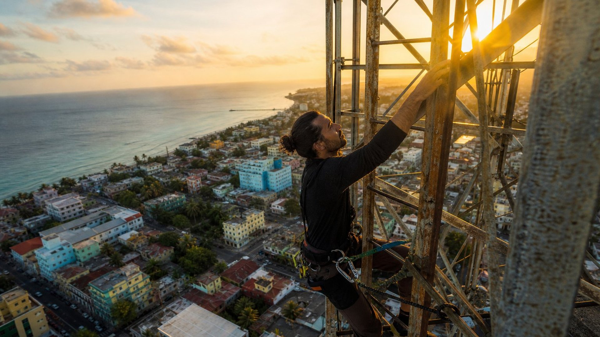
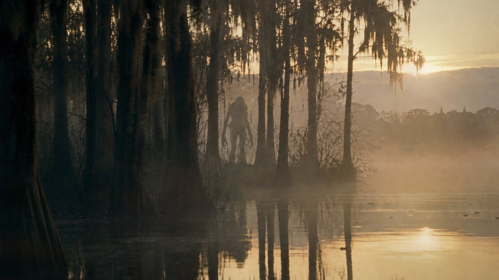
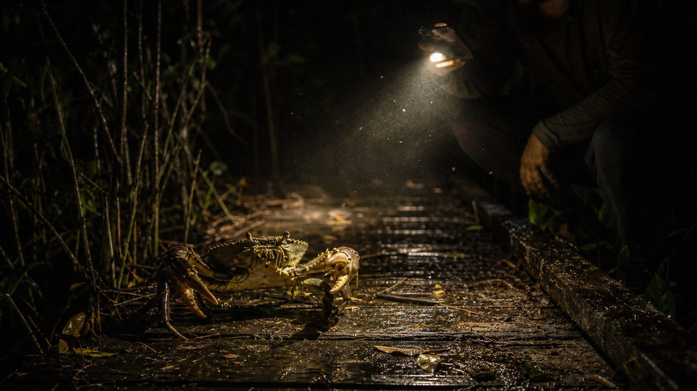
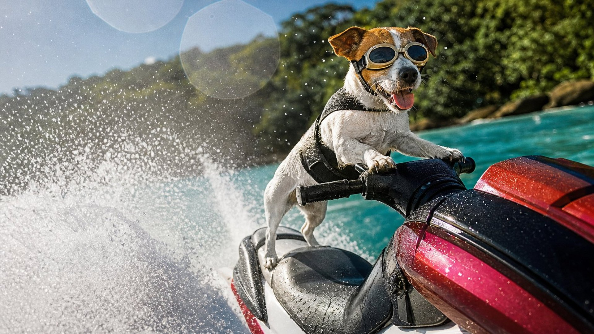
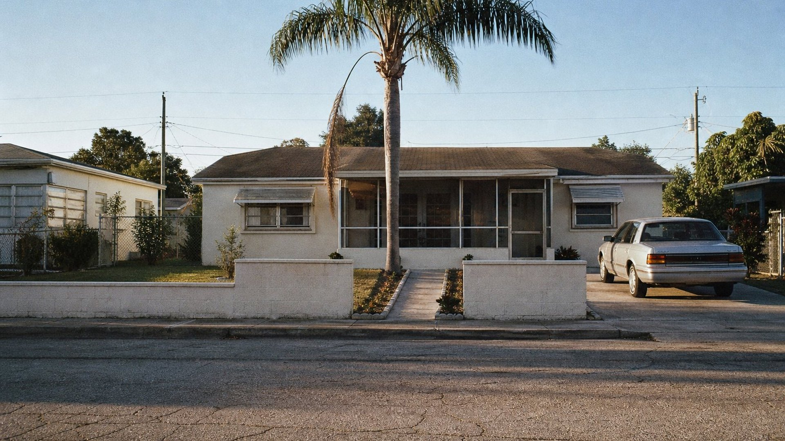
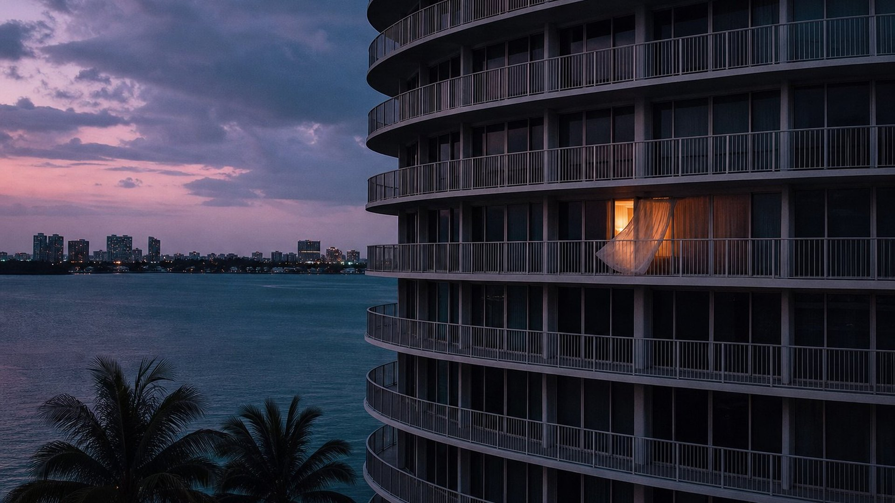
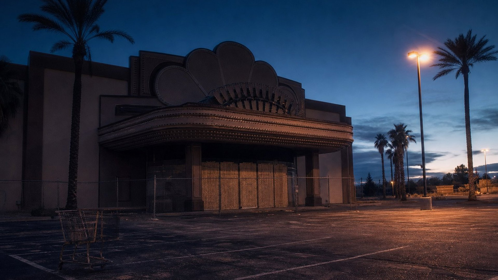
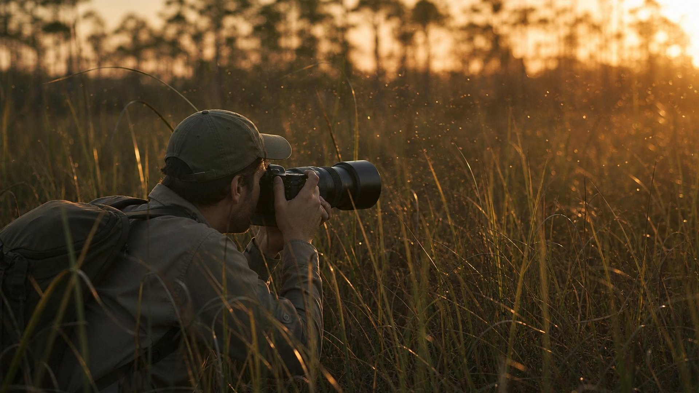
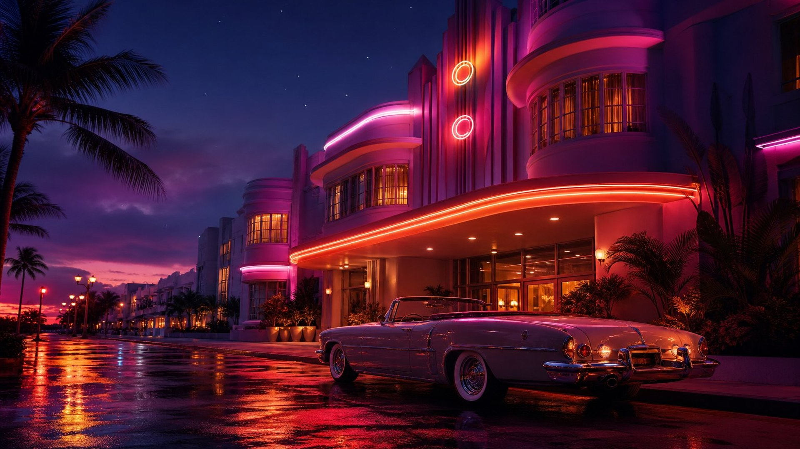
SEC-16SEC-11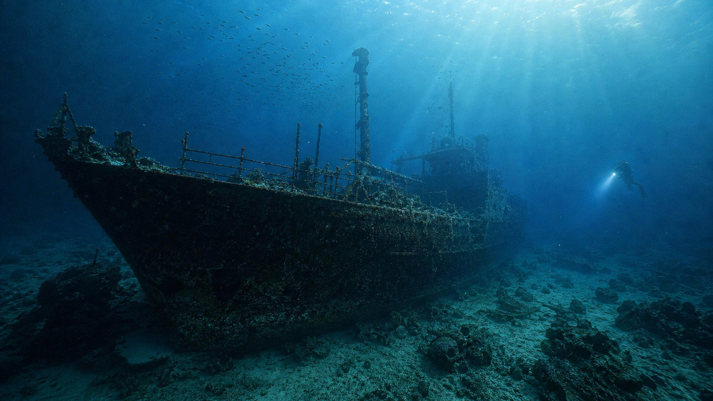